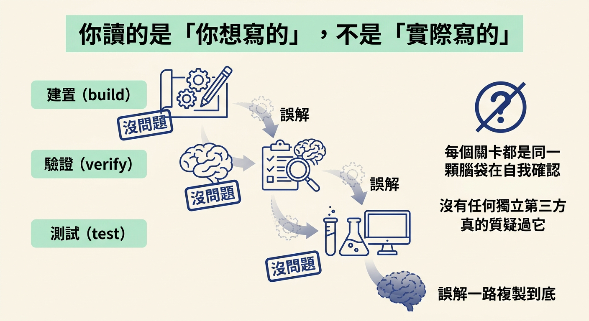
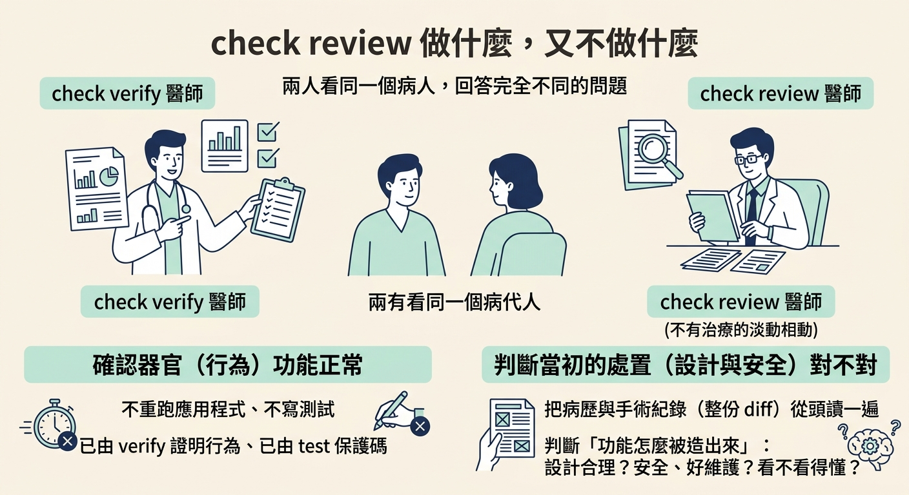
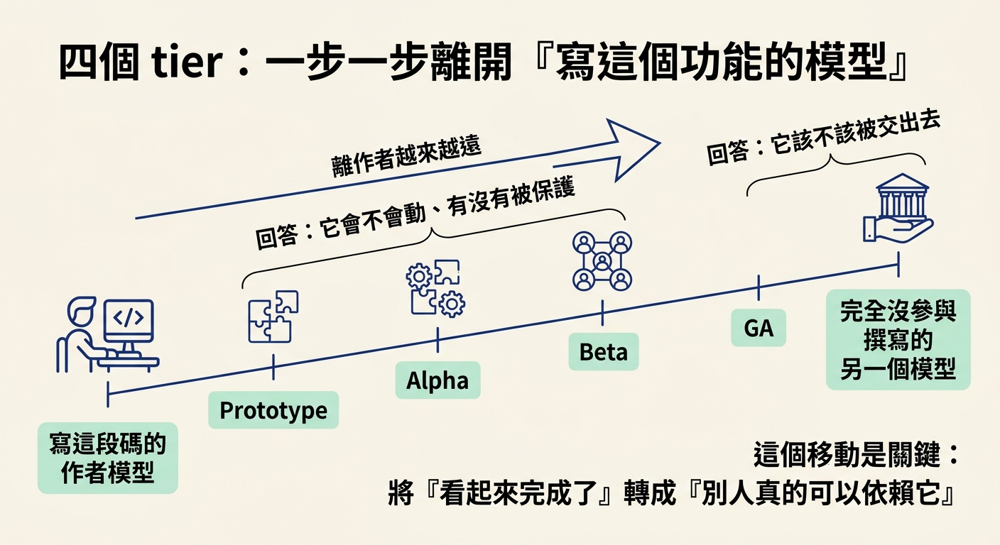

這一節要回答一個問題：當一個功能已經建好、也測過，為什麼不能直接讓同一個模型自己當評審？你會認出「建置、驗證、測試都由同一個模型包辦」的缺口，知道為什麼換一個更強的同款模型不算解法，也會看懂 GA tier 用「不曾參與撰寫的另一個模型」補上的究竟是什麼。
你可能遇過這種情況。你請 AI 寫了一個功能，接著叫它自己跑一遍確認沒問題，再叫它自己檢查有沒有漏洞。三次它都回你「看起來沒問題，可以上線」。可是隔天換另一個人打開檔案，五分鐘就看出一個你和你的模型都沒注意到的問題。
這件事不是誰不夠聰明，而是「審自己的作品」本身就有結構上的弱點。這一節要解釋這個弱點從哪裡來，以及為什麼補上它的方法，是另外找一個沒有參與的人。
先想自己校對文章的經驗。你盯著自己剛寫完的稿子，眼睛會自動把腦中預期的字補上去，於是錯字、漏句、邏輯跳躍很容易整段被略過。你不是看不懂，而是你腦袋記得的版本比紙上實際的版本更牢。
模型有同樣的弱點，而且更明顯。課程把這件事講得很直接：你沒辦法可靠地審自己的作品，因為你「讀的是你原本想寫的，不是實際存在的東西」。模型也一樣，它會偏好自己的輸出，尤其是當它在評一個「已經做下」的決定時，更難掉頭承認那裡有問題。
把這個弱點放進 workflow，就會看到真正的風險：同一個誤解可以在建置、驗證、測試三個階段一路複製。每個階段都回報「沒問題」，因為做每一個階段的是同一顆會做出那個誤解的腦袋。沒有人在中途真正質疑過它。

直覺上你可能會想：那就用同一個家族裡更強的版本來審，總該看得到弱版本看不到的東西吧。
但這樣做，審的人繼承的是同一套假設與偏好。它可能答得更漂亮、寫得更長，卻仍然站在作者的視角上，看得見作者看得見的東西，也看不見作者看不見的東西。課程的說法是：用同一個模型的更強版本「不會修好這件事」，你需要的是「一個抵達時沒有共享作者假設的獨立審查者」。
這句話是整個 GA tier 的核心。你要的不是「更聰明的自己」，而是「沒有跟你一起做決定的另一個人」。
在重要程式碼上線前，一定要有一個沒寫過這段碼的人讀過它。這是工程團隊幾十年來的慣例，不是新發明。GA 只是把這件事搬進 agentic workflow：把已經建置、驗證、測試過的程式碼，交給一個完全沒參與撰寫的不同模型。
課程把這個 tier 的定位講得很清楚。GA 指的是 general availability，也就是你的應用程式正式對外上線，是驗證與檢查層級裡最高的一階。它加上的，正是「重要程式碼出貨前，找一個沒寫它的人來 review」。
拿到那一手程式碼的是 check review。它的職責範圍刻意收得很窄，因為上游的檢查已經把其他事情做完了。
check verify 已經證明過行為。test 已經在保護這段碼。這個「怎麼被造出來」翻成具體問題，就是四句：設計合不合理？程式安不安全、好不好維護？有沒有 spec 和測試都沒抓到的安全風險？下一個接手的人看不看得懂這裡在做什麼？
你可以把 check verify 和 check review 想成兩個不同科別的醫師。verify 是跑一輪檢查，量數據、看報告，確認器官功能正常；review 則是請另一位沒參與治療的資深醫師，把你的病歷和手術紀錄從頭讀一遍，判斷當初的處置方式對不對。兩個人看的都是同一個病人，但回答的是完全不一樣的問題。

- **`review`** (fresh model code review): a senior read of the diff on a **different model than wrote the code** (a model reviewing its own output shares its blind spots). Writes findings ranked by severity to `docs/reviews/`. Read only. Typically before a PR.
原文裡兩個關鍵字值得圈起來：fresh model（一個沒寫過這段碼的新模型）與 read only（只看不改）。它負責判斷，不負責動手修，所以結構上不會把評審和作者混在一起。
把前面幾章走過的 tier 排在一起，你會發現每一階都在做同一件事：讓檢查離「寫這段碼的模型」更遠一步。
| Tier | 誰做這個檢查 | 得到什麼 |
|---|---|---|
| Prototype | 建置的人自己檢查 | 功能依自己的想法成形 |
| Alpha | 在真實 app 上跑，證明功能會動 | 行為被證明過，不只是「應該可以」 |
| Beta | 用測試把行為保護起來 | 之後改動不容易把它弄壞 |
| GA | 換一個不同的模型，在上線前 review | 一個沒共享作者假設的獨立判斷 |
課程特別提醒去注意這個共同點：check 一步一步離開「寫這個功能的模型」。這個移動，才是把「看起來完成了」轉成「別人真的可以依賴它」的關鍵。前面幾階回答的是「它會不會動、有沒有被保護」，GA 回答的是「它該不該被交出去」。

同一個模型會在建置、驗證、測試一路帶著同一個誤解前進，因為它讀的是自己預期的版本，也偏愛自己的輸出。換同款更強的模型沒用，因為盲點會一起升級。
工程團隊長久以來的解法，是讓一個沒寫過這段碼的人在上線前讀它。GA tier 就是這件事：把已建置、驗證、測試過的程式碼交給一個完全不同、且唯讀的模型，由它判斷設計、安全、可維護性、以及 spec 與測試都沒抓到的風險。
check review不重跑 app、不寫測試，它只判斷「這東西是怎麼被造出來的」。
理解為什麼需要第二個視角之後，下一節要真的跑一次 check review：看它怎麼先判斷作者模型、怎麼換成另一個模型、怎麼讀完整份檔案，以及一份 findings 到底長什麼樣子。